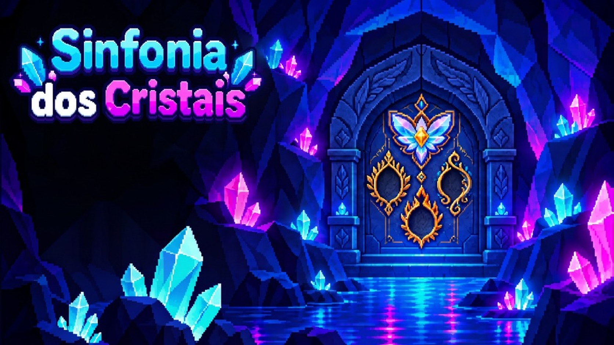

Sua jornada começa com um pequeno brilho.
Escolha uma luz no caminho.
Arraste cristais para somar, subtrair ou anular; toque em Citrinos e Água-Marinhas para dividir; pressione R para reiniciar a fase.
Crystal Math Mania — Sinfonia dos Cristais
Conceito e direção: projeto da turma.Arte e motor True Pixel Art (320×180 / Hi-Bit 640×360).
Músicas: “Era Uma Vez” e “O que um cristal pode fazer”, áudios fornecidos pelo projeto.Efeitos cristalinos sintetizados em WebAudio.
Inspirado nas gemas e nos biomas do Brasil, com elementos de fantasia.
Seu progresso foi guardado neste navegador. Você pode fechar esta aba.